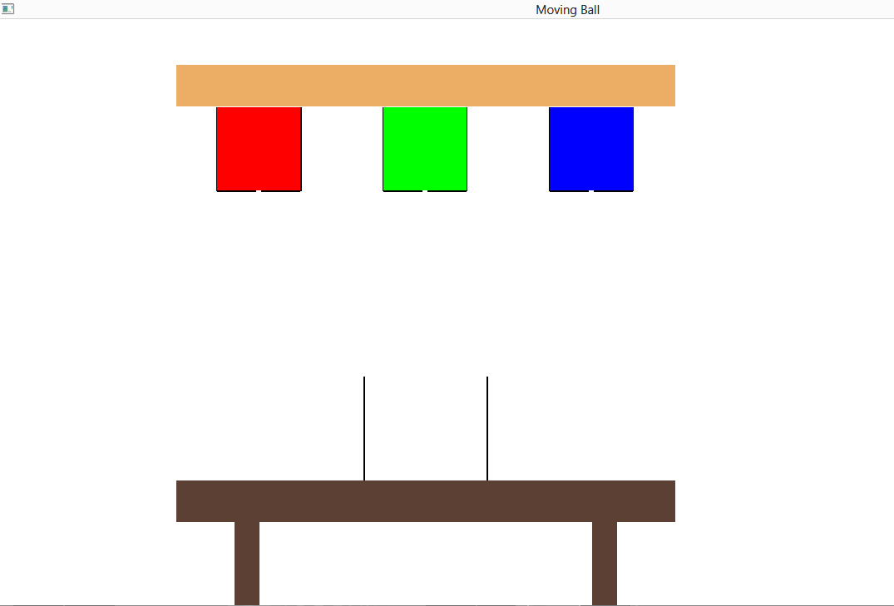
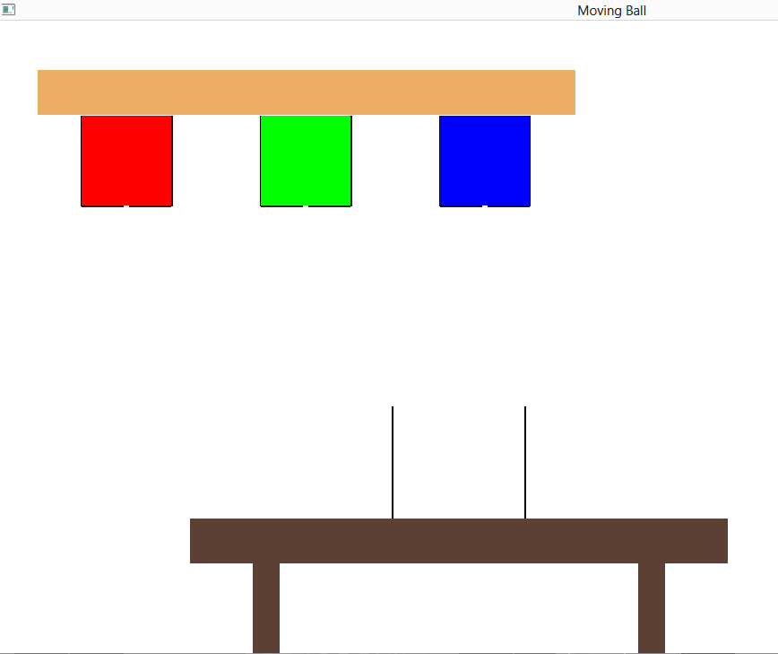
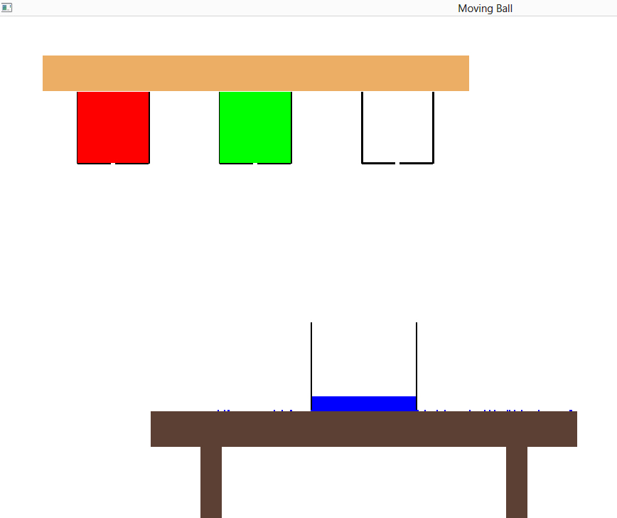
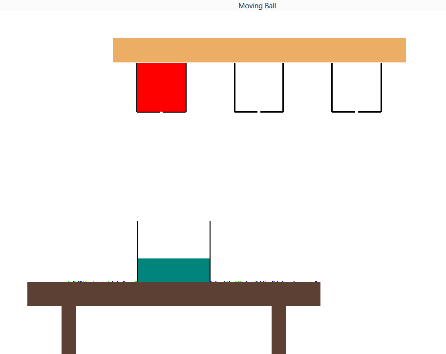
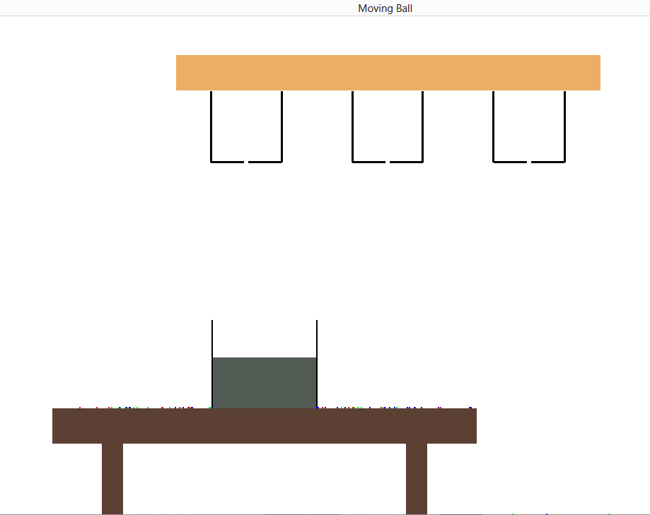

| ITERATION | IMAGE |
|---|---|
| The following images demostrate a sample run where all the colours are mixed in the RGB colour mixer. The order is BLUE -> GREEN -> RED. The new colour obtained is based on the RGB ratios of the existing colours. | |
| 1 |  |
| 2 |  |
| 3 |  |
| 4 |  |
| 5 |  |
| 6 |  |
| 7 |  |
| 8 |  |
| 9 |  |
| 10 |  |